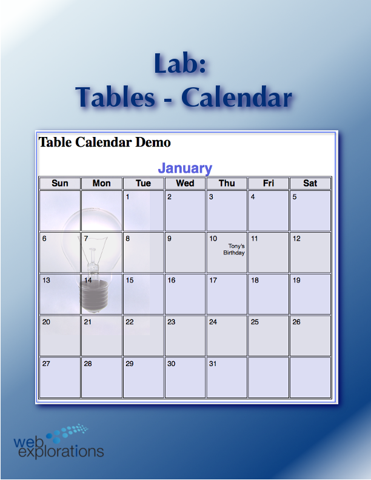
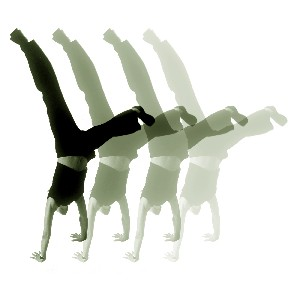
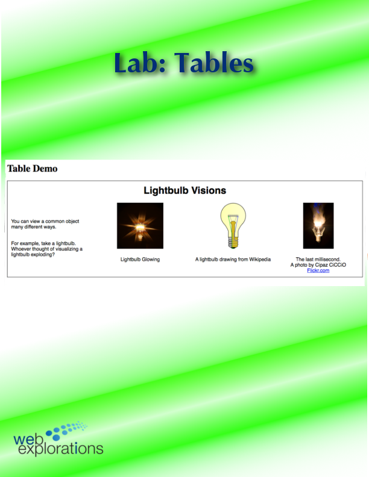
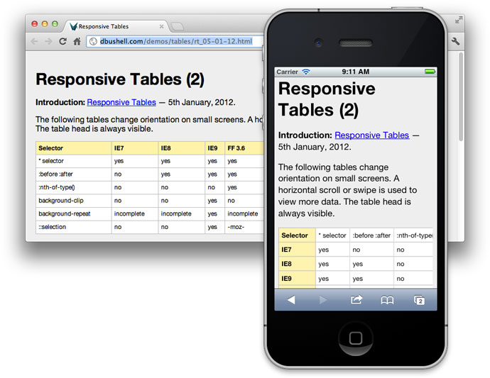
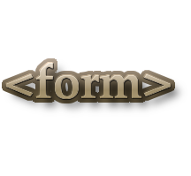

|
Tables |
Organize that information! |

In this module you will learn:
Demonstrate how to use the <table> element.
- Create a simple web page containing a table with multiple rows and columns.
- Incorporate a table with comments in the web template to speed development time and simplify maintenance.
- Use CSS to style table components.
- Create a table that does not have borders.
- Create a table with cells that span several columns or rows.
- Create a table inside a table, or nested tables.
WII-FM (What's In It - For Me)
Not all information looks good as a paragraph. When you want to
display rows and columns of information you'll want to reach into your web tool box and bring out your set of table building tools.
Complete these Learning Activities:
Total estimated time for this module: 6 hours.
Take the SelfQuiz:Table. This is your LEARNING experience.
You can take this self-quiz as many times as you like. Keep in mind that it will close Sunday night before the graded quiz opens.
Be smart and take the self-quiz once each day to learn the material.
Estimated Time: 10 minutes (probably a lot less) each time you take a self-quiz.
Take the Self-Quiz: Table.
Read Chapter 9 of Basics of Web Design HTML5 and CSS3 - HTML Basics.

- Create table rows, cells, and headers.
- Span rows and columns.
- Configure an accessible table.
- Style a table using CSS.
- Configure table sections.
Estimated Time: 2 hours
Read Chapter 9 of Basics of Web Design HTML5 and CSS3 - HTML Basics.
 Learn how to include images and use CSS to style your tables. Lab: Table with Images and CSS
Learn how to include images and use CSS to style your tables. Lab: Table with Images and CSS
You'll also learn how to span across several columns (and down several rows) which is useful when captioning and adding general headings.
Estimated Time: 1 hour
Learn how to include images and use CSS to style your tables. Lab: Table with Images and CSS.

You'll also learn how to add a background image to a table as well as how to add zebra-striping.
You'll also learn a great trick adding transparency to an element using rgba( ) (red-green-blue-alpha)
Estimated Time: 1 hour
Get more practice styling tables using the <span> element and the class=" " attribute with this Lab: Table - Calendar.
Learn about Media Queries and Building Responsive Web pages using this code: mediaQueryDemo.zip- Learn how to make your pages automatically adapt to mobile and tablet devices.
Here is a Smashing Magazine article with more information: Responsive Web Design: What It Is and How To Use It.
Estimated Time: 1 hour
Learn about Media Queries and Building Responsive Web pages using this code: mediaQueryDemo.zip- Learn how to make your pages automatically adapt to mobile and tablet devices.
Check out A complete guide to CSS and Tables by Chris Coyier. Pick out the table display you want to use. (CSS/JavaScript/HTML all shown). Do a ctrl F (find) for: blur to see a really cool effect.
Here is a live recording showing Chris at his zany best:
Chris Coyier also has a page showing a collection of nice looking tables out on CodePen.
Estimated Time: 2 hours
Complete the Table in a Table Learning Lab to learn more about tables and to extend your web design powers.
Resources: TableInTableSTART.html (To save the file: right-mouse click, "save link as" )
Save these graphics on your computer using right-mouse click, "save image as"


Here is what the finished page should look like:

(Click on the graphic above to see a larger view)
Please note: This is not the project, this is to give you an opportunity to noodle around with tables to find out what works and what doesn't. What you learn here will directly apply to your project. (Please do not use this practice lab in your project and expect to get credit...)
Having Problems? Here is the trick: Make two separate tables. One to for the outer table (outlined here in blue) and a separate table for the inner table (outlined here in red). Validate the page to make certain there are no errors/warnings. Once the tables are correct, copy the inner table and paste it inside a <td> </td> element of the outer table. Voila! A table inside a table.
Check your work with an HTML Validator - You may be missing something in your HTML markup
Check to make certain you have matching start and stop tags for each element.
Estimated Time: 1 hour
Complete the Table in a Table Learning Lab
Your Graded Assignments For This Module

This project covers tables and forms. Build your table page now and add the form information as you finish the next Module: Forms.

Your Tip-Of-The-Week
(Click on the lightbulb to reveal the tip.)

Responsive Tables
Chris Coyier shows different ways you can create Responsive Data Tables that will display tables on the desktop as well as a mobile phone.
What's Next?

A critical piece of your website: getting information from the user! The next module will show you how by using forms.